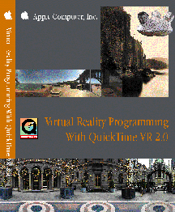

Virtual Reality Programming
With QuickTime VR 2.0
With Reference Sections

This book, Virtual Reality Programming With QuickTime VR 2.0, describes QuickTime VR, an extension of the QuickTime technology developed by Apple Computer, Inc. that allows users to interactively explore and examine photorealistic, three-dimensional virtual worlds. In particular, this book describes the QuickTime VR Manager, which is the part of the system software for Macintosh and other computers that you can use to control QuickTime VR movies programmatically. You can use the QuickTime VR Manager to give your application greater control over QuickTime VR movies. For example, you can use the QuickTime VR Manager to- display movies of panoramas and objects
- perform basic orientation, positioning, and animation control
- intercept and override QuickTime VR's mouse-tracking and default hot spot behaviors
- composite flat or perspective overlays (such as QuickDraw 3D objects or QuickTime movies)
- specify transition effects
- control QuickTime VR's memory usage
- intercept calls to some QuickTime VR Manager functions and modify their behavior
- Note
-
Currently, only
C-language programming interfaces are available.

- Note
- This book does not describe how to capture VR scenes or
author QuickTime VR movies using tools such as the QuickTime
VR Authoring Tools Suite. See the documentation provided with
your authoring software for complete information.
Availability: Click below to obtain Inside Macintosh: Virtual Reality Programming With QuickTime VR 2.0 in any of the following formats:
|
|
|
|
|
|

24 JAN 1997